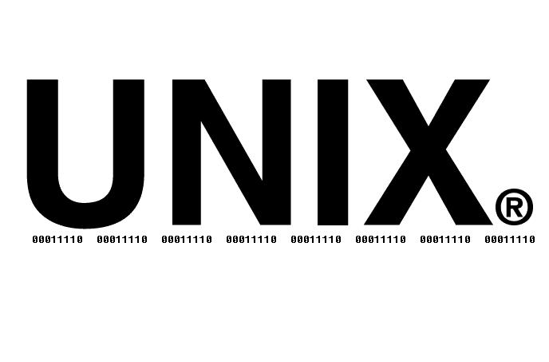

Working with the filesystem
Understand absolute and relative paths, navigate with special symbols, use tab completion and wildcards, and build confidence moving around the file system.
Overview
Every file on your computer lives inside a hierarchy of directories. To work in the terminal, you need to know how to describe where files are (paths) and how to move between directories efficiently. This tutorial covers the filesystem’s tree structure, the difference between absolute and relative paths, special shorthand symbols, tab completion, and wildcards.

Prerequisites: CLI fundamentals
The filesystem as a tree
Your computer’s filesystem is organized like an upside-down tree. At the very top is the , written as /. Every file and directory on the system lives somewhere under root.
Here is a simplified view of what a macOS filesystem looks like:
/
├── Applications/
├── System/
├── Users/
│ ├── jane/
│ │ ├── Desktop/
│ │ ├── Documents/
│ │ │ └── report.txt
│ │ ├── Downloads/
│ │ └── Pictures/
│ └── shared/
└── tmp/Directories contain other directories and files. The path from root down to any file describes exactly where it lives — like a mailing address.
You can visualize your own filesystem with the tree command. If you installed it in the previous tutorial (brew install tree), try:
tree -L 2 ~The -L 2 flag limits the display to two levels deep so you don’t get overwhelmed.
Absolute vs relative paths
There are two ways to describe where a file is: absolute paths and relative paths.
Absolute paths
An starts from the root directory (/) and spells out the full location:
/Users/jane/Documents/report.txtAn absolute path works no matter where you currently are in the filesystem. It always starts with /.
Relative paths
A starts from your current working directory. If you are in /Users/jane, then:
Documents/report.txtpoints to the same file as the absolute path above. Relative paths never start with /.
Worked example
Suppose you are in /Users/jane/Desktop. Here are two ways to reach the same file:
# Absolute path — works from anywhere
cat /Users/jane/Documents/report.txt
# Relative path — works because we are in /Users/jane/Desktop
cat ../Documents/report.txtThe .. in the relative path means “go up one directory” (from Desktop to jane), then descend into Documents.
Special path symbols
The shell recognizes several shorthand symbols that make navigation faster.
| Symbol | Meaning | Example |
|---|---|---|
~ |
Home directory | cd ~ |
. |
Current directory | ls . |
.. |
Parent directory (one level up) | cd .. |
- |
Previous directory (with cd) |
cd - |
Home directory (~)
The tilde ~ expands to your . These two commands are equivalent:
cd /Users/jane
cd ~You can also use ~ inside paths:
ls ~/DocumentsRunning cd with no arguments also takes you home:
cdCurrent directory (.)
A single dot refers to the directory you are in right now. You rarely need it for navigation, but it appears in paths like ./script.sh (meaning “run script.sh from the current directory”).
Parent directory (..)
Double dots mean “one level up.” You can chain them:
cd ../..This moves up two levels. After each cd, run pwd to confirm where you landed.
Previous directory (-)
cd - jumps back to whatever directory you were in before the last cd. This is handy when you are bouncing between two locations:
cd ~/Documents
cd /tmp
cd -
pwd/Users/jane/DocumentsThe home directory
Your home directory (~) is where your personal files and settings live. On macOS it is typically /Users/yourname; on Linux, /home/yourname.
Common directories you will find inside ~:
| Directory | Contains |
|---|---|
Desktop/ |
Files visible on your desktop |
Documents/ |
Personal documents |
Downloads/ |
Files downloaded from the web |
Pictures/ |
Images and screenshots |
Tab completion
Tab completion is one of the most useful features of the shell. Instead of typing a full file name or path, type just the first few characters and press Tab:
cd Docu⟨Tab⟩The shell completes it to cd Documents/.
Multiple matches
If more than one file matches, pressing Tab once does nothing. Press Tab twice to see all the options:
cd Do⟨Tab⟩⟨Tab⟩Documents/ Downloads/Type one more character to narrow it down, then Tab again:
cd Doc⟨Tab⟩Commands and programs
Tab completion also works for commands themselves. Type a few letters of a command and press Tab to see matching programs:
bre⟨Tab⟩⟨Tab⟩break brewWildcards and globbing
let you match multiple files at once using patterns instead of exact names. The shell expands these patterns — a process called — before passing the results to the command.
The * wildcard
An asterisk matches any sequence of characters (including none):
ls *.txtnotes.txt report.txt todo.txtThis lists every file in the current directory that ends with .txt.
You can use * anywhere in a pattern:
ls report.*report.txt report.pdfThe ? wildcard
A question mark matches exactly one character:
ls file?.txtfile1.txt file2.txt fileA.txtThis would not match file10.txt (two characters after “file”) or file.txt (zero characters).
Practical examples
Copy all Markdown files to a backup directory:
cp *.md backup/List only three-letter file extensions:
ls *.???Be especially careful combining wildcards with rm. The command rm *.txt deletes every .txt file in the current directory with no confirmation. Always run ls with the same pattern first to verify what will be matched:
ls *.txt # preview what matches
rm *.txt # then delete if correctPractical patterns
Here are a few common filesystem tasks that combine what you have learned.
Copying and moving between directories
Copy a file from your current directory to another:
cp report.txt ~/Documents/Move a file from Downloads to Documents:
mv ~/Downloads/data.csv ~/Documents/Creating nested directories
The -p flag tells mkdir to create parent directories as needed:
mkdir -p projects/website/imagesThis creates projects/, projects/website/, and projects/website/images/ all in one command — even if none of them exist yet.
Spaces in file names
File names with spaces require quoting. Without quotes, the shell interprets each word as a separate argument:
# This tries to list two items: "my" and "file.txt"
ls my file.txt
# This lists the single file "my file.txt"
ls "my file.txt"You can also escape the space with a backslash:
ls my\ file.txtAvoiding spaces in file names makes life easier in the terminal. Use underscores (my_file.txt) or hyphens (my-file.txt) instead.
Summary
| Symbol / concept | Meaning |
|---|---|
/ |
Root directory (start of absolute paths) |
~ |
Home directory |
. |
Current directory |
.. |
Parent directory |
- (with cd) |
Previous directory |
* |
Wildcard: matches any characters |
? |
Wildcard: matches one character |
Tab |
Auto-complete file names and commands |
"quotes" |
Handle spaces in file names |
mkdir -p |
Create nested directories |
Next tutorial: Shell configuration